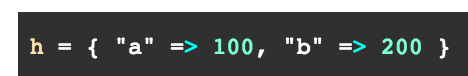

Arrays and hashes are collections of objects that are ordered (though in previous versions of Ruby hashes were unordered).
An array basically stores objects -- any kind of objects, including other arrays, hashes, integers and strings to name a few. An array has a built-in index mechanism whereby you can call up a particular object within the array using its corresponding index. The first object has an index of [0], the next object [1], and so on. Also useful is that the last object in an array, whether or not you know how many objects the array has, can be summoned with the index value of [-1]. To call up a particular object within an array, you can use array[n], n being the index number of the object you wish to summon. For example, with the array "example" consisting of [6, 9, 12, 4], you could call up the second object (9) by using example[1]. You could call up the last element with the following: example[-1].
A hash stores objects in key/value pairs. For example:
In this example "a" is the key for the value 100. You can access the 100 value like this: h["a"] ==> 100
In practice, often times hashes are used to store large strings and their corresponding abbreviations.